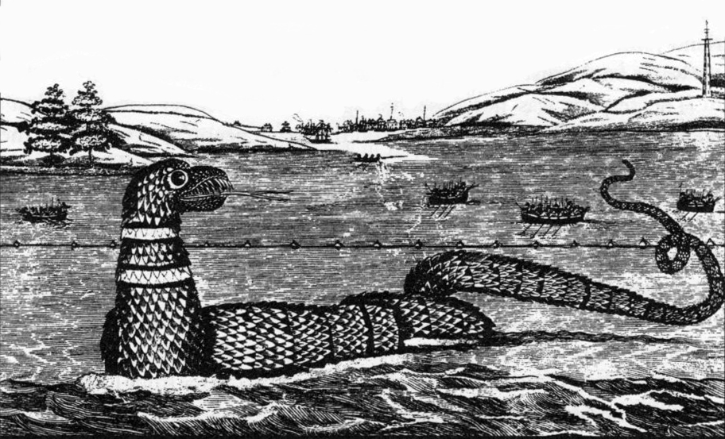

The Monster That Everyone Saw and No One Cared to Talk About
No one here wants to talk about the sea serpent. The docent at the Maritime Museum has heard about it, of course—everyone has—but it’s just some local legend. It doesn’t mean anything. At two different bookstores I stop into, nobody knows much about the sea serpent, but they both point me to the book Wayne Soini’s The Gloucester Sea Serpent. It is everywhere books are sold. It seems to be all Gloucester wants to say about their sea serpent.
Soini refers to the botched taxonomy job by the New England Linnaean Society as a “flop”: “because a Loblolly Cove snake distracted and confused” the committee, they “lost their chance at scientific acclaim.” The story of the sea serpent has become a story of a committee duped by a rickety snake and the limitations of taxonomy.
Source: Read more here